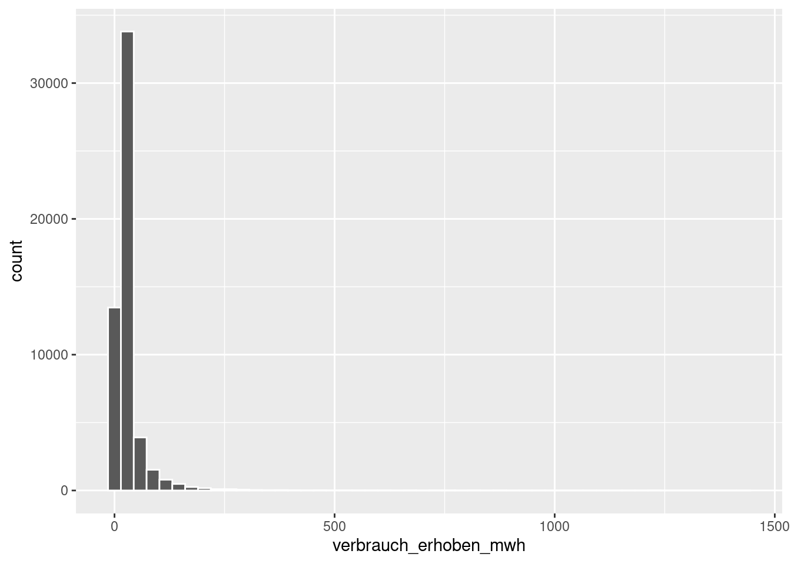
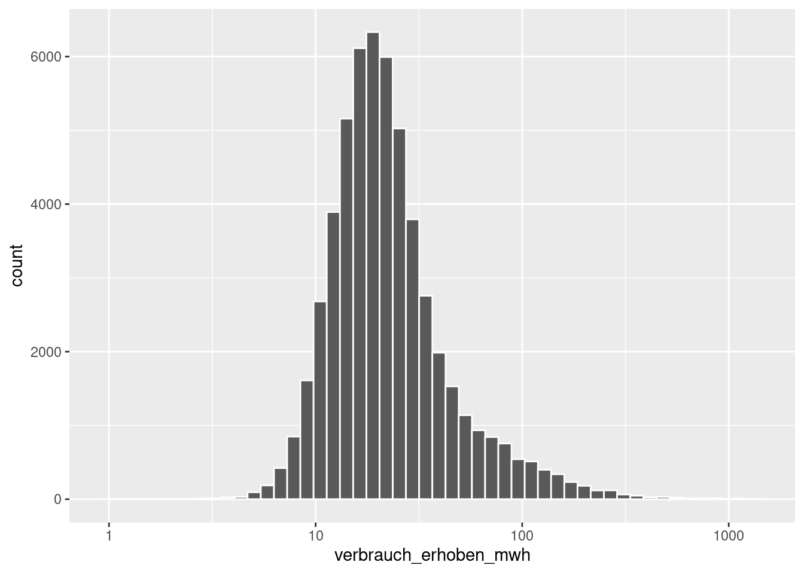
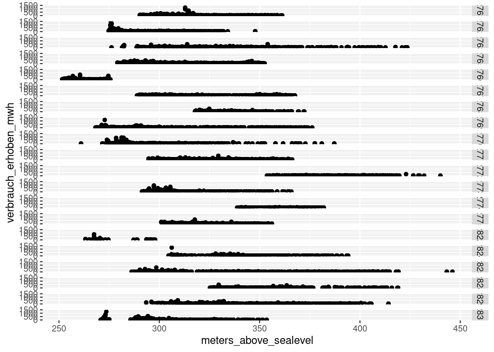
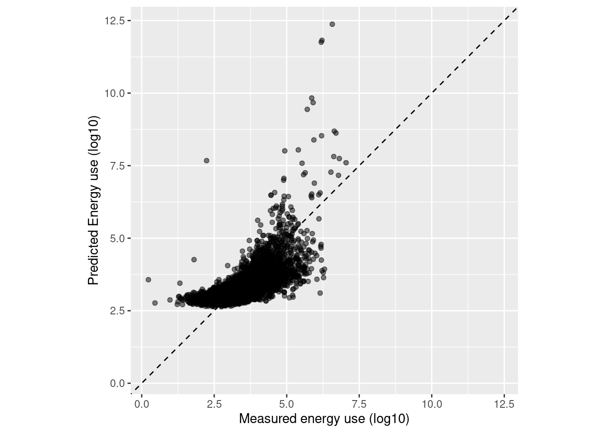
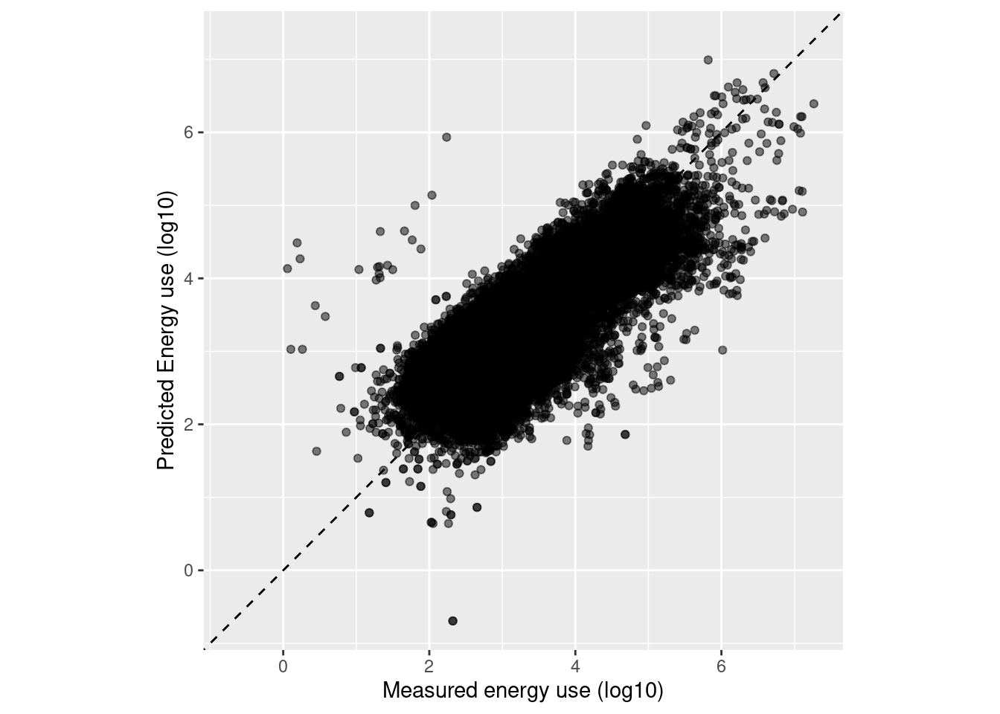

5.1 Exploratory Analysis
As the histogram is right-skewed (a few houses with a high energy use), it makes sense to log-transform.

correlations <- energy_clean %>%
select(where(is.numeric)) %>%
correlations()
#> Warning in stats::cor(x, use = use, method = method): the standard deviation is
#> zeroenergy_clean_log <- energy_clean %>%
mutate(verbrauch_erhoben_mwh_log = log(verbrauch_erhoben_mwh))5.2 Per community
community_plot <- energy_clean %>%
ggplot(aes(x = meters_above_sealevel, y = verbrauch_erhoben_mwh)) +
geom_point() +
facet_grid(rows = vars(ggdenr))
community_plot
6 Train/test split
#> Set the random number stream using `set.seed()` so that the results can be
#> reproduced later.
set.seed(501)
#> Save the split information for an 80/20 split of the data
energy_split <- initial_split(energy_clean_log, prop = 0.80, strata = verbrauch_erhoben_mwh)
energy_split
#> <Training/Testing/Total>
#> <43885/10973/54858>
#> Creating train and test set
energy_train <- training(energy_split)
energy_test <- testing(energy_split)
dim(energy_train)
#> [1] 43885 57
#> Resampling train set
set.seed(123)
folds <- vfold_cv(energy_train, v = 5, strata = verbrauch_erhoben_mwh)
folds
#> # 5-fold cross-validation using stratification
#> # A tibble: 5 × 2
#> splits id
#> <list> <chr>
#> 1 <split [35106/8779]> Fold1
#> 2 <split [35106/8779]> Fold2
#> 3 <split [35108/8777]> Fold3
#> 4 <split [35110/8775]> Fold4
#> 5 <split [35110/8775]> Fold57 Model fitting
lm_model <-
linear_reg() %>%
set_engine("lm")
lm_form_fit <-
lm_model %>%
fit(verbrauch_erhoben_mwh_log ~ bruttogeschossflaeche + gkode + gkodn + erhebungsjahr, data = energy_clean_log)
lm_form_fit
#> parsnip model object
#>
#>
#> Call:
#> stats::lm(formula = verbrauch_erhoben_mwh_log ~ bruttogeschossflaeche +
#> gkode + gkodn + erhebungsjahr, data = data)
#>
#> Coefficients:
#> (Intercept) bruttogeschossflaeche gkode
#> 4.967e+01 1.454e-03 1.496e-08
#> gkodn erhebungsjahr
#> 1.338e-05 -3.167e-02tidy(lm_form_fit)
#> # A tibble: 5 × 5
#> term estimate std.error statistic p.value
#> <chr> <dbl> <dbl> <dbl> <dbl>
#> 1 (Intercept) 49.7 3.17 15.7 2.57e- 55
#> 2 bruttogeschossflaeche 0.00145 0.00000651 223. 0
#> 3 gkode 0.0000000150 0.000000465 0.0322 9.74e- 1
#> 4 gkodn 0.0000134 0.000000818 16.4 4.72e- 60
#> 5 erhebungsjahr -0.0317 0.00127 -25.0 6.48e-137prediction <- predict(lm_form_fit, energy_test)
test_res <- bind_cols(prediction, energy_test %>% select(egid, gbez, verbrauch_erhoben_mwh_log))ggplot(test_res, aes(x = verbrauch_erhoben_mwh_log, y = .pred)) +
#> Create a diagonal line:
geom_abline(lty = 2) +
geom_point(alpha = 0.5) +
labs(y = "Predicted Energy use (log10)", x = "Measured energy use (log10)") +
#> Scale and size the x- and y-axis uniformly:
coord_obs_pred()
ggplot(energy_clean, aes(x = log(verbrauch_erhoben_mwh), y = log(verbrauch_geschaetzt_mwh))) +
#> Create a diagonal line:
geom_abline(lty = 2) +
geom_point(alpha = 0.5) +
labs(y = "Predicted Energy use (log10)", x = "Measured energy use (log10)") +
#> Scale and size the x- and y-axis uniformly:
coord_obs_pred()
#> Warning in log(verbrauch_geschaetzt_mwh): NaNs produced
#> Warning in log(verbrauch_geschaetzt_mwh): NaNs produced
#> Warning: Removed 8 rows containing missing values (`geom_point()`).